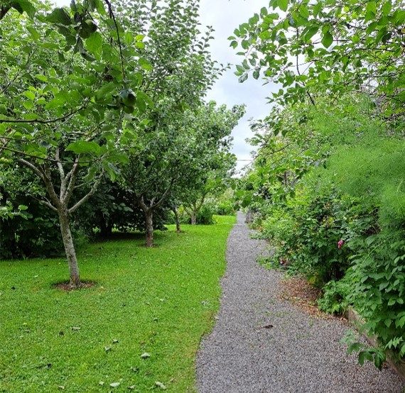

When we think of Ireland, green expanses and majestic landscapes come to mind, but the island is also home to some magnificent gardens. On the island, you'll find gardens to suit all tastes, precise Italian gardens and walled gardens that seem to come from the past, quirky gardens inspired by exotic locations and hidden gardens in bustling cities.
